Análisis exploratorio de datos - Espectro de respuesta (Ing. Sísmica)#
import numpy as np
import pandas as pd
import matplotlib.pyplot as plt
import seaborn as sns
df = pd.read_csv(r'C:\Users\elias\OneDrive\Desktop\dataviz_py\eda-jbook\docs\NGACOL.csv')
df
| Hypocenter Depth (km) | Magnitude | Rrup_OpenQuake | Soil_Class | Tmax | origen | Seismic Latitude | Seismic Longitude | Station Latitude | Station Longitude | T_0.01_RotD50 | |
|---|---|---|---|---|---|---|---|---|---|---|---|
| 0 | 7.213 | 3.4 | 2.503074 | 2 | 0.808081 | NGAW2 | 37.1173 | -121.5231 | 37.1635 | -121.6265 | -6.819442 |
| 1 | 7.213 | 3.4 | 3.296947 | 3 | 1.081081 | NGAW2 | 37.1173 | -121.5231 | 37.0492 | -121.8072 | -6.369086 |
| 2 | 7.213 | 3.4 | 3.551053 | 3 | 1.081081 | NGAW2 | 37.1173 | -121.5231 | 36.9275 | -121.8276 | -5.961014 |
| 3 | 7.213 | 3.4 | 2.999226 | 3 | 1.333333 | NGAW2 | 37.1173 | -121.5231 | 37.1543 | -121.7347 | -5.323799 |
| 4 | 8.469 | 3.4 | 2.526528 | 3 | 1.666667 | NGAW2 | 36.6008 | -121.2089 | 36.6181 | -121.3147 | -2.696168 |
| ... | ... | ... | ... | ... | ... | ... | ... | ... | ... | ... | ... |
| 10234 | 10.040 | 7.9 | 6.091197 | 3 | 20.000000 | NGAW2 | 30.9860 | 103.3640 | 36.4000 | 103.8000 | -4.435628 |
| 10235 | 10.040 | 7.9 | 5.892141 | 3 | 26.666667 | NGAW2 | 30.9860 | 103.3640 | 35.8000 | 104.1000 | -4.283697 |
| 10236 | 10.040 | 7.9 | 5.929802 | 2 | 26.666667 | NGAW2 | 30.9860 | 103.3640 | 35.8000 | 103.9000 | -4.434821 |
| 10237 | 10.040 | 7.9 | 6.031838 | 3 | 13.333333 | NGAW2 | 30.9860 | 103.3640 | 36.0000 | 103.3000 | -4.438374 |
| 10238 | 10.040 | 7.9 | 6.060944 | 3 | 20.000000 | NGAW2 | 30.9860 | 103.3640 | 36.3000 | 103.6000 | -4.095531 |
10239 rows × 11 columns
Glosario de términos#
Variable |
Tipo |
Unidad / Formato |
Rol (GMPE) |
Descripción clara |
Chequeos / validaciones rápidas |
|---|---|---|---|---|---|
Hypocenter Depth (km) |
Numérica (float) |
km |
Fuente |
Profundidad del hipocentro del sismo. |
≥ 0; revisar outliers; comparar por |
Magnitude |
Numérica (float) |
Magnitud Mw |
Fuente |
Magnitud del evento sísmico. |
Rango típico ~[0, 9]; detectar nulos |
Rrup_OpenQuake |
Numérica (float) |
km |
Trayectoria |
Distancia Rrup (fuente–sitio), calculada con OpenQuake (por el nombre). |
> 0; revisar ceros; distribución sesgada |
Soil_Class |
Categórica (string/int) |
Clase 1,2,3,4,5 |
Sitio |
Clasificación de suelo/condición de sitio de la estación. |
Revisar categorías únicas; estandarizar etiquetas |
Tmax |
Numérica (float) |
segundos |
Feature |
periodo máximo válido del espectro |
documentar cómo se calcula. |
origen |
Categórica (string) |
Etiqueta (NGAW2 o Colombia) |
Metadato |
de que dataset viene |
Revisar categorías; analizar sesgos por origen (M, Depth, Rrup). |
Seismic Latitude |
Numérica (float) |
grados |
Geo (evento) |
Latitud del evento (epicentro/ubicación del sismo). |
En [-90, 90] |
Seismic Longitude |
Numérica (float) |
grados |
Geo (evento) |
Longitud del evento. |
En [-180, 180] |
Station Latitude |
Numérica (float) |
grados |
Geo (estación) |
Latitud de la estación sísmica (sitio). |
En [-90, 90] |
Station Longitude |
Numérica (float) |
grados |
Geo (estación) |
Longitud de la estación sísmica (sitio). |
En [-180, 180] |
T_0.01_RotD50 |
Numérica (float) |
g (si es Sa) o unidades del registro |
Respuesta |
Medida de movimiento del suelo RotD50 en T = 0.01 s (típicamente Sa(T) RotD50). |
> 0; analizar en log; revisar valores cercanos a 0; outliers muy altos. |
La variable de respuesta es T_0.01_RotD50 que indica el logaritmo de la aceleración del suelo a en un punto a partir de un evento sísmico específico
inputs = df.drop('T_0.01_RotD50', axis=1)
output = df['T_0.01_RotD50']
print(df.columns)
Index(['Hypocenter Depth (km)', 'Magnitude', 'Rrup_OpenQuake', 'Soil_Class',
'Tmax', 'origen', 'Seismic Latitude', 'Seismic Longitude',
'Station Latitude', 'Station Longitude', 'T_0.01_RotD50'],
dtype='object')
print(df.isna().sum())
Hypocenter Depth (km) 0
Magnitude 0
Rrup_OpenQuake 0
Soil_Class 0
Tmax 35
origen 0
Seismic Latitude 0
Seismic Longitude 0
Station Latitude 0
Station Longitude 0
T_0.01_RotD50 0
dtype: int64
Análisis univariado#
T_0.01_RotD50#
La variable será tratada con la transformación exponencial que representa la aceleración real. (El logaritmo es la transformación que se le realiza cuando se quiere aplicar modelos de machine learning, ya que esta transformación mejora la distribución)
col = "T_0.01_RotD50"
s = pd.to_numeric(np.exp(df[col]), errors="coerce")
print("=== Resumen:", col, "===")
print("n_valid:", int(s.notna().sum()))
print("n_missing:", int(s.isna().sum()))
print("min:", float(s.min()) if s.notna().any() else np.nan)
print("median:", float(s.median()) if s.notna().any() else np.nan)
print("max:", float(s.max()) if s.notna().any() else np.nan)
=== Resumen: T_0.01_RotD50 ===
n_valid: 10239
n_missing: 0
min: 0.00011283500000000001
median: 0.016961839999999995
max: 1.793158
x = s.dropna()
plt.figure(figsize=(7.2, 4.2), dpi=120)
plt.hist(x, bins=50)
plt.title(f"Histograma — {col} (n={len(x)})")
plt.xlabel(col); plt.ylabel("Frecuencia")
plt.grid(True); plt.tight_layout()
plt.show()
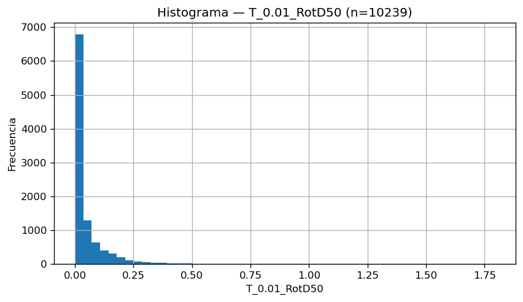
Se puede evidenciar como los valores están muy sesgados con cola hacia la derecha de manera que la mayor cantidad de datos se encuentra en valores muy bajos.
x_sorted = np.sort(x.values)
y = np.arange(1, len(x_sorted) + 1) / len(x_sorted) if len(x_sorted) else np.array([])
plt.figure(figsize=(7.2, 4.2), dpi=120)
plt.plot(x_sorted, y, linewidth=2)
plt.title(f"ECDF — {col} (n={len(x_sorted)})")
plt.xlabel(col); plt.ylabel("F(x)")
plt.ylim(0, 1)
plt.xscale("log")
plt.grid(True); plt.tight_layout()
plt.show()

La variable cubre varios órdenes de magnitud. La mediana se encuentra alrededor de 2x10-2. Se observa cola derecha (pocos casos con valores altos), porque la ECDF se “aplana” acercándose a 1 para valores grandes.
plt.figure(figsize=(7.2, 2.4), dpi=120)
plt.boxplot(x.values, vert=False, showfliers=True)
plt.title(f"Boxplot — {col} (n={len(x)})")
plt.xlabel(col)
plt.xscale("log")
plt.grid(True); plt.tight_layout()
plt.show()
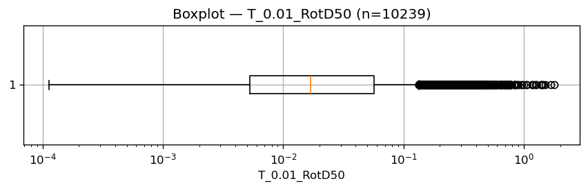
# Resumen de medidas de tendencia y dispersión para la variable objetivo
s = pd.to_numeric(df['T_0.01_RotD50'], errors='coerce').dropna()
print("Describe:")
print(s.describe(), "\n")
print("Moda (puede tener múltiples valores):")
print(s.mode().values, "\n")
print(f"Asimetría (skew): {s.skew():.6f}")
print(f"Curtosis (kurtosis): {s.kurt():.6f}")
Describe:
count 10239.000000
mean -4.115497
std 1.698535
min -9.089584
25% -5.246313
50% -4.076789
75% -2.871488
max 0.583978
Name: T_0.01_RotD50, dtype: float64
Moda (puede tener múltiples valores):
[-5.19084498 -4.92874116 -4.74719918 -4.14897077 -4.09840921]
Asimetría (skew): -0.172572
Curtosis (kurtosis): -0.427023
Con un mínimo entre 10-4 y 10-3 al expandir el eje horizontal, se puede evidenciar que la distribución está balanceada a derecha y la izquierda
Magnitud (escala de magnitud de momentos)#
col = "Magnitude"
s = pd.to_numeric(df[col], errors="coerce")
print("=== Resumen:", col, "===")
print("n_valid:", int(s.notna().sum()))
print("n_missing:", int(s.isna().sum()))
print("min:", float(s.min()) if s.notna().any() else np.nan)
print("median:", float(s.median()) if s.notna().any() else np.nan)
print("max:", float(s.max()) if s.notna().any() else np.nan)
=== Resumen: Magnitude ===
n_valid: 10239
n_missing: 0
min: 3.2
median: 6.2
max: 7.9
x = s.dropna()
plt.figure(figsize=(7.2, 4.2), dpi=120)
plt.hist(x, bins=40)
plt.title(f"Histograma — {col} (n={len(x)})")
plt.xlabel(col); plt.ylabel("Frecuencia")
plt.grid(True); plt.tight_layout()
plt.show()
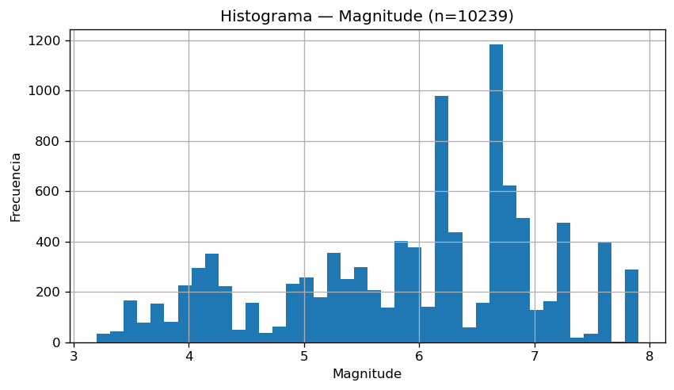
Rango aproximado 3.2 a 8.0. La distribución posee varios picos lo que muestra mezcla de lugares. La mayor densidad está entre 5.0 y 7.0, con eventos grandes presentes pero menos frecuentes hacia >7.5.
x_sorted = np.sort(x.values)
y = np.arange(1, len(x_sorted) + 1) / len(x_sorted) if len(x_sorted) else np.array([])
plt.figure(figsize=(7.2, 4.2), dpi=120)
plt.plot(x_sorted, y, linewidth=2)
plt.title(f"ECDF — {col} (n={len(x_sorted)})")
plt.xlabel(col); plt.ylabel("F(x)")
plt.ylim(0, 1)
plt.grid(True); plt.tight_layout()
plt.show()
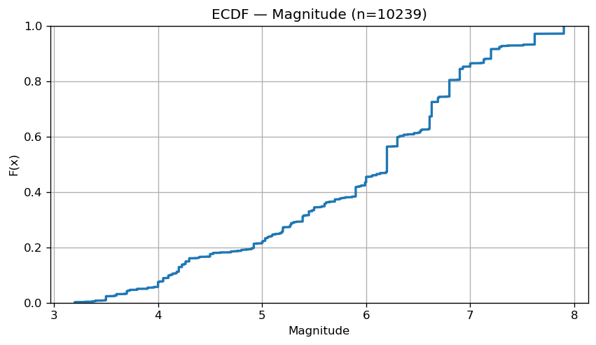
plt.figure(figsize=(7.2, 2.4), dpi=120)
plt.boxplot(x.values, vert=False, showfliers=True)
plt.title(f"Boxplot — {col} (n={len(x)})")
plt.xlabel(col)
plt.grid(True); plt.tight_layout()
plt.show()
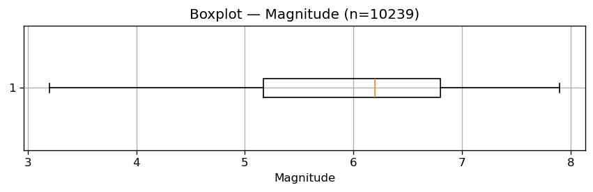
Hypocenter Depth (km). Profundidad hipocentral#
col = "Hypocenter Depth (km)"
s = pd.to_numeric(df[col], errors="coerce")
print("=== Resumen:", col, "===")
print("n_valid:", int(s.notna().sum()))
print("n_missing:", int(s.isna().sum()))
print("min:", float(s.min()) if s.notna().any() else np.nan)
print("median:", float(s.median()) if s.notna().any() else np.nan)
print("max:", float(s.max()) if s.notna().any() else np.nan)
=== Resumen: Hypocenter Depth (km) ===
n_valid: 10239
n_missing: 0
min: 1.331
median: 10.0
max: 58.7
x = s.dropna()
plt.figure(figsize=(7.2, 4.2), dpi=120)
plt.hist(x, bins=40)
plt.title(f"Histograma — {col} (n={len(x)})")
plt.xlabel(col); plt.ylabel("Frecuencia")
plt.grid(True); plt.tight_layout()
plt.show()

La mayoría de eventos son someros es decir, existe concentración fuerte entre 5 y 15 km. Hay una cola de pocos eventos más profundos hasta 60km.
x_sorted = np.sort(x.values)
y = np.arange(1, len(x_sorted) + 1) / len(x_sorted) if len(x_sorted) else np.array([])
plt.figure(figsize=(7.2, 4.2), dpi=120)
plt.plot(x_sorted, y, linewidth=2)
plt.title(f"ECDF — {col} (n={len(x_sorted)})")
plt.xlabel(col); plt.ylabel("F(x)")
plt.ylim(0, 1)
plt.grid(True); plt.tight_layout()
plt.show()
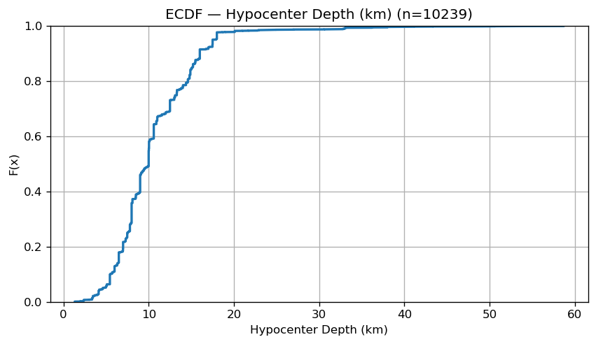
La profundidad crece rápido en la ECDF antes de 20 km: por lectura visual, alrededor del 95% de los registros están por debajo de 18–20 km lo que confirma que el dataset está conformado por sismos corticales (superficiales)
plt.figure(figsize=(7.2, 2.4), dpi=120)
plt.boxplot(x.values, vert=False, showfliers=True)
plt.title(f"Boxplot — {col} (n={len(x)})")
plt.xlabel(col)
plt.grid(True); plt.tight_layout()
plt.show()

Rrup_OpenQuake (Distancia de ruptura)#
col = "Rrup_OpenQuake"
s = pd.to_numeric(np.exp(df[col]), errors="coerce")
print(" Resumen:", col,)
print("n_valid:", int(s.notna().sum()))
print("n_missing:", int(s.isna().sum()))
print("min:", float(s.min()) if s.notna().any() else np.nan)
print("median:", float(s.median()) if s.notna().any() else np.nan)
print("max:", float(s.max()) if s.notna().any() else np.nan)
Resumen: Rrup_OpenQuake
n_valid: 10239
n_missing: 0
min: 0.05000000000000001
median: 71.48000000000008
max: 1532.66
x = s.dropna()
plt.figure(figsize=(7.2, 4.2), dpi=120)
plt.hist(x, bins=50)
plt.title(f"Histograma — {col} (n={len(x)})")
plt.xlabel(col); plt.ylabel("Frecuencia")
plt.grid(True); plt.tight_layout()
plt.show()

Distribución fuertemente sesgada a la derecha: muchos registros a distancias pequeñas/medias y pocos a distancias grandes Hay una cola larga con valores que llegan hasta 1600 km (es por ello que siempre se usa la transformación logarítmica también para esta variable)
x_sorted = np.sort(x.values)
y = np.arange(1, len(x_sorted) + 1) / len(x_sorted) if len(x_sorted) else np.array([])
plt.figure(figsize=(7.2, 4.2), dpi=120)
plt.plot(x_sorted, y, linewidth=2)
plt.title(f"ECDF — {col} (n={len(x_sorted)})")
plt.xlabel(col); plt.ylabel("F(x)")
plt.xscale("log")
plt.ylim(0, 1)
plt.grid(True); plt.tight_layout()
plt.show()
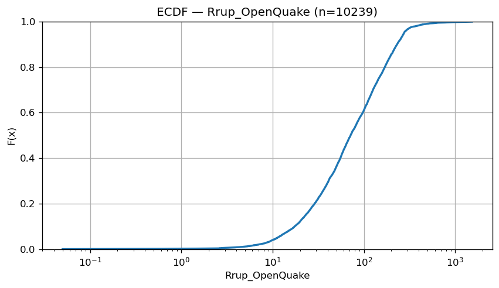
La ECDF sugiere que la mayor parte de registros está entre 10 y 200 km. Visualmente, la mediana está alrededor de 70–80 km. Aproximadamente, la mayor parte del crecimiento ocurre antes de 300–400 km. Notar que se usó la escala logarítmica en el eje horizontal.
plt.figure(figsize=(7.2, 2.4), dpi=120)
plt.boxplot(x.values, vert=False, showfliers=True)
plt.title(f"Boxplot — {col} (n={len(x)})")
plt.xlabel(col)
plt.xscale("log")
plt.grid(True); plt.tight_layout()
plt.show()
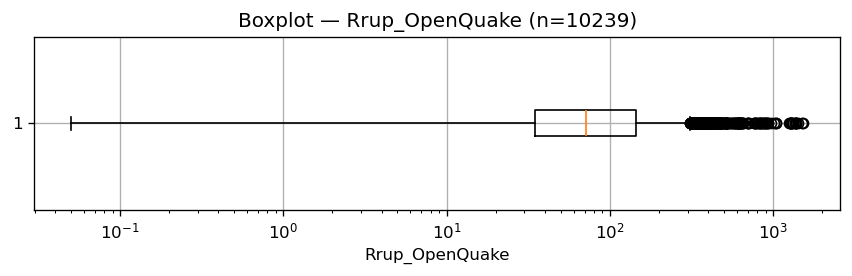
Tmax (Periodo máximo confiable para la señal recibida)#
col = "Tmax"
s = pd.to_numeric(df[col], errors="coerce")
print("Resumen:", col)
print("n_valid:", int(s.notna().sum()))
print("n_missing:", int(s.isna().sum()))
print("min:", float(s.min()) if s.notna().any() else np.nan)
print("median:", float(s.median()) if s.notna().any() else np.nan)
print("max:", float(s.max()) if s.notna().any() else np.nan)
Resumen: Rrup_OpenQuake
n_valid: 10239
n_missing: 0
min: 0.05000000000000001
median: 71.48000000000008
max: 1532.66
x = s.dropna()
plt.figure(figsize=(7.2, 4.2), dpi=120)
plt.hist(x, bins=40)
plt.title(f"Histograma — {col} (n={len(x)})")
plt.xlabel(col); plt.ylabel("Frecuencia")
plt.grid(True); plt.tight_layout()
plt.show()
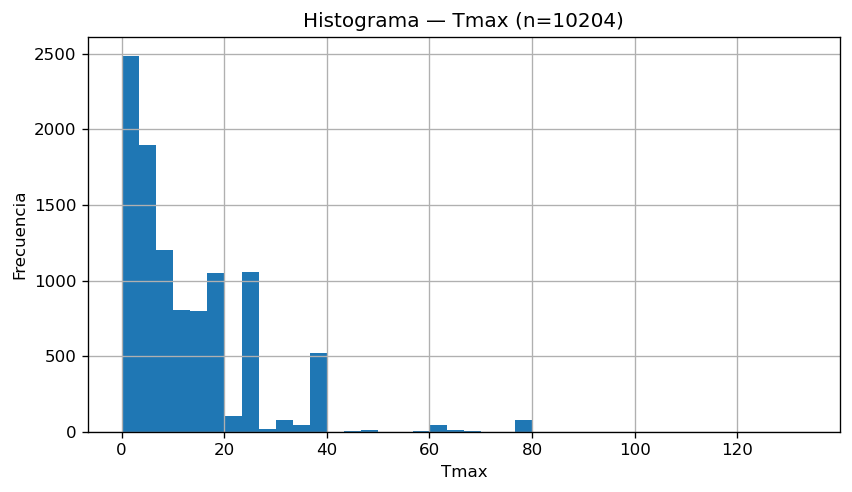
Concentración muy fuerte en valores bajos (cerca de 0–10). Hay valores muy alejados del grupo inicial
x_sorted = np.sort(x.values)
y = np.arange(1, len(x_sorted) + 1) / len(x_sorted) if len(x_sorted) else np.array([])
plt.figure(figsize=(7.2, 4.2), dpi=120)
plt.plot(x_sorted, y, linewidth=2)
plt.title(f"ECDF — {col} (n={len(x_sorted)})")
plt.xlabel(col); plt.ylabel("F(x)")
plt.ylim(0, 1)
plt.grid(True); plt.tight_layout()
plt.show()

La acumulación es muy rápida, 80% está por debajo de 20 y 95% por debajo de 40 aproximadamente.Hay una cola pequeña que llega a 130.
plt.figure(figsize=(7.2, 2.4), dpi=120)
plt.boxplot(x.values, vert=False, showfliers=True)
plt.title(f"Boxplot — {col} (n={len(x)})")
plt.xlabel(col)
plt.grid(True); plt.tight_layout()
plt.show()

Soil_Class#
col = "Soil_Class"
s = df[col].astype("string")
counts = s.value_counts(dropna=False)
perc = 100 * counts / counts.sum()
print("Resumen:", col)
print("n_total:", len(df))
print("categorías:", int(counts.shape[0]))
print("\nTop categorías:\n", counts.head(10))
Resumen: Rrup_OpenQuake
n_total: 10239
categorías: 2
Top categorías:
origen
NGAW2 9702
Colombia 537
Name: count, dtype: Int64
# Conteos
plt.figure(figsize=(7.2, 4.2), dpi=120)
plt.bar(counts.index.astype(str), counts.values)
plt.title(f"Conteos — {col} (n={len(df)})")
plt.xlabel(col); plt.ylabel("Conteo")
plt.xticks(rotation=45)
plt.grid(True); plt.tight_layout()
plt.show()
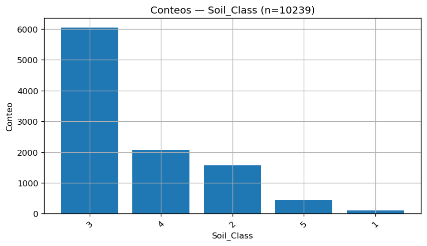
Dataset muy desbalanceado: Soil_Class = 3 domina claramente. Clases 4 y 2 aportan un bloque importante, mientras 5 es minoritaria y 1 es casi residual. Esto implicará que cualquier análisis puede quedar sesgado hacia la clase 3 si no controlas por balance/ponderación/estratificación.
# Porcentajes
plt.figure(figsize=(7.2, 4.2), dpi=120)
plt.bar(perc.index.astype(str), perc.values)
plt.title(f"Porcentajes — {col} (n={len(df)})")
plt.xlabel(col); plt.ylabel("%")
plt.xticks(rotation=45)
plt.grid(True); plt.tight_layout()
plt.show()
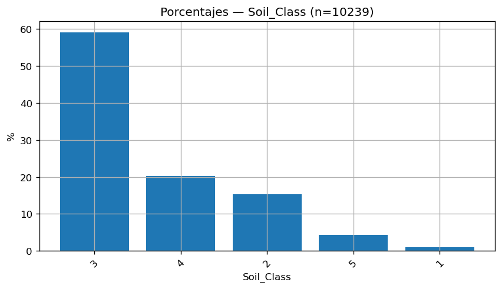
Estaciones sísmicas usadas#
import geopandas as gpd
import plotly.express as px
d = df[["Station Latitude", "Station Longitude"]].copy()
d["Station Latitude"] = pd.to_numeric(d["Station Latitude"], errors="coerce")
d["Station Longitude"] = pd.to_numeric(d["Station Longitude"], errors="coerce")
d = d.dropna()
fig = px.scatter_geo(
d,
lat="Station Latitude",
lon="Station Longitude",
projection="natural earth",
title=f"Estaciones — Mapa global (n={len(d)})",
)
fig.update_traces(marker=dict(size=4, opacity=0.5))
fig.update_layout(height=520)
fig.show()
lat_col = "Station Latitude"
lon_col = "Station Longitude"
d = df[[lat_col, lon_col]].copy()
d[lat_col] = pd.to_numeric(d[lat_col], errors="coerce")
d[lon_col] = pd.to_numeric(d[lon_col], errors="coerce")
d = d.dropna()
# Conteo exacto
unique_exact = d.drop_duplicates().shape[0]
# Conteo con redondeo (para evitar micro-variaciones)
decimals = 4
dr = d.round(decimals)
unique_rounded = dr.drop_duplicates().shape[0]
print("=== Estaciones (pares lat/lon) ===")
print("Registros con lat/lon válidos:", len(d))
print("Estaciones únicas (exacto):", unique_exact)
print(f"Estaciones únicas (redondeo a {decimals} decimales):", unique_rounded)
counts = (
dr.groupby([lat_col, lon_col])
.size()
.sort_values(ascending=False)
)
print("\nTop 10 estaciones con más registros (redondeo):")
print(counts.head(10))
print("\nResumen de registros por estación (redondeo):")
print(counts.describe())
=== Estaciones (pares lat/lon) ===
Registros con lat/lon válidos: 10239
Estaciones únicas (exacto): 4113
Estaciones únicas (redondeo a 4 decimales): 4000
Top 10 estaciones con más registros (redondeo):
Station Latitude Station Longitude
37.0080 -121.2870 23
36.7640 -121.4472 21
37.1635 -121.6265 21
37.3416 -121.6426 20
37.4504 -121.8004 20
35.9450 -120.5420 20
37.1543 -121.7347 18
37.9123 -121.9072 18
37.2063 -121.9773 18
37.7294 -121.8335 18
dtype: int64
Resumen de registros por estación (redondeo):
count 4000.000000
mean 2.559750
std 2.446104
min 1.000000
25% 1.000000
50% 2.000000
75% 3.000000
max 23.000000
dtype: float64
Con esto se verifica que una única estación puede tener mas de una aparición si se tiene un conjunto de sismos a su cercanía.
Ubicación de sismos usando Lat Lon#
d = df[["Seismic Latitude", "Seismic Longitude"]].copy()
d["Seismic Latitude"] = pd.to_numeric(d["Seismic Latitude"], errors="coerce")
d["Seismic Longitude"] = pd.to_numeric(d["Seismic Longitude"], errors="coerce")
d = d.dropna()
fig = px.scatter_geo(
d,
lat="Seismic Latitude",
lon="Seismic Longitude",
projection="natural earth",
title=f"Eventos sísmicos — Mapa global (n={len(d)})",
)
fig.update_traces(marker=dict(size=4, opacity=0.55))
fig.update_layout(height=520)
fig.show()
Se puede evidenciar como los eventos sísmicos del dataset no solo están en Colombia, sino en otros luguares como California (USA), Italia, China, Nueva Zelanda, etc.
lat_col = "Seismic Latitude"
lon_col = "Seismic Longitude"
d = df[[lat_col, lon_col]].copy()
d[lat_col] = pd.to_numeric(d[lat_col], errors="coerce")
d[lon_col] = pd.to_numeric(d[lon_col], errors="coerce")
d = d.dropna()
# Conteo exacto
unique_exact = d.drop_duplicates().shape[0]
# Conteo con redondeo
decimals = 4
dr = d.round(decimals)
unique_rounded = dr.drop_duplicates().shape[0]
print("=== Eventos (pares lat/lon) ===")
print("Registros con lat/lon válidos:", len(d))
print("Eventos únicos (exacto):", unique_exact)
print(f"Eventos únicos (redondeo a {decimals} decimales):", unique_rounded)
#(usando redondeo)
counts = (
dr.groupby([lat_col, lon_col])
.size()
.sort_values(ascending=False)
)
print("\nTop 10 eventos con más registros (redondeo):")
print(counts.head(10))
print("\nResumen de registros por evento (redondeo):")
print(counts.describe())
=== Eventos (pares lat/lon) ===
Registros con lat/lon válidos: 10239
Eventos únicos (exacto): 403
Eventos únicos (redondeo a 4 decimales): 403
Top 10 eventos con más registros (redondeo):
Seismic Latitude Seismic Longitude
37.5382 138.6174 613
37.3070 138.8390 530
35.2750 133.3500 414
23.8500 120.8200 400
39.0270 140.8780 367
32.3000 -115.2670 359
23.8100 121.0800 327
23.9400 121.0100 301
23.8700 121.0100 296
30.9860 103.3640 262
dtype: int64
Resumen de registros por evento (redondeo):
count 403.000000
mean 25.406948
std 67.558585
min 1.000000
25% 2.000000
50% 5.000000
75% 17.000000
max 613.000000
dtype: float64
Con esto se concluye que para un sismo en particular, pueden haber varios registros de diferentes estaciones.
Observar como un solo sismo pudo recoger información de 613 estaciones distintas.
Distribución de origen#
counts = df['origen'].astype('string').value_counts()
plt.figure(figsize=(7.2, 4.2), dpi=120)
plt.bar(counts.index, counts.values)
plt.title("Conteo de registros por origen")
plt.xlabel("origen")
plt.ylabel("Conteo")
plt.xticks(rotation=45)
plt.grid(True)
plt.tight_layout()
plt.show()
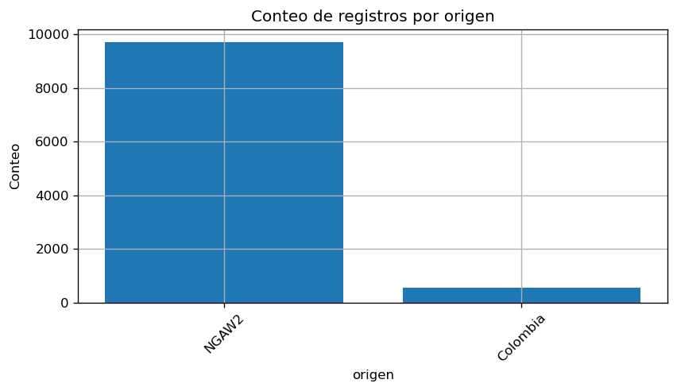
NGAW2 domina el dataset, y Colombia es minoría. Implicará que las métricas reflejarían principalmente NGAW2 si no se hace un buen ajuste.
Pruebas de hipótesis de normalidad#
num_cols = [
"Hypocenter Depth (km)", "Magnitude", "Rrup_OpenQuake", "Tmax",
"Seismic Latitude", "Seismic Longitude",
"Station Latitude", "Station Longitude",
"T_0.01_RotD50"
]
from scipy.stats import kstest
rows = []
for col in num_cols:
s = pd.to_numeric(df[col], errors="coerce").dropna()
n = len(s)
if n < 3:
rows.append({"variable": col, "n": n, "D": np.nan, "p_value": np.nan})
continue
n_used = n
mu = float(s.mean())
sigma = float(s.std(ddof=1))
if sigma == 0:
rows.append({"variable": col, "n": n, "n_used": n_used, "D": np.nan, "p_value": np.nan})
continue
z = (s - mu) / sigma
D, p = kstest(z.values, "norm")
rows.append({
"variable": col,
"n_used": n_used,
"mu": mu,
"sigma": sigma,
"D": float(D),
"p_value": float(p)
})
ks_df = pd.DataFrame(rows).sort_values("p_value", ascending=True)
print(ks_df)
variable n_used mu sigma D \
7 Station Longitude 10239 1.236687 120.297085 0.281791
6 Station Latitude 10239 30.661651 13.862467 0.258112
5 Seismic Longitude 10239 1.283627 120.050236 0.283092
4 Seismic Latitude 10239 30.674930 13.952354 0.245196
3 Tmax 10204 13.212392 12.731730 0.160194
0 Hypocenter Depth (km) 10239 10.611286 5.111330 0.144010
1 Magnitude 10239 5.912488 1.139730 0.127684
2 Rrup_OpenQuake 10239 4.206842 1.026970 0.041518
8 T_0.01_RotD50 10239 -4.115497 1.698535 0.020279
p_value
7 0.000000e+00
6 0.000000e+00
5 0.000000e+00
4 0.000000e+00
3 3.143910e-229
0 9.172062e-186
1 5.555801e-146
2 8.985136e-16
8 4.340063e-04
Como todos los p valores están por debajo del 5%, se rechaza la hipótesis nula de que las variables tienen un comportamiento con distribución normal.